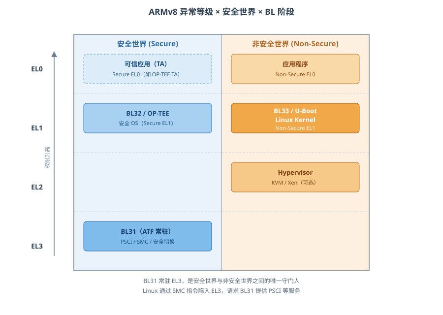
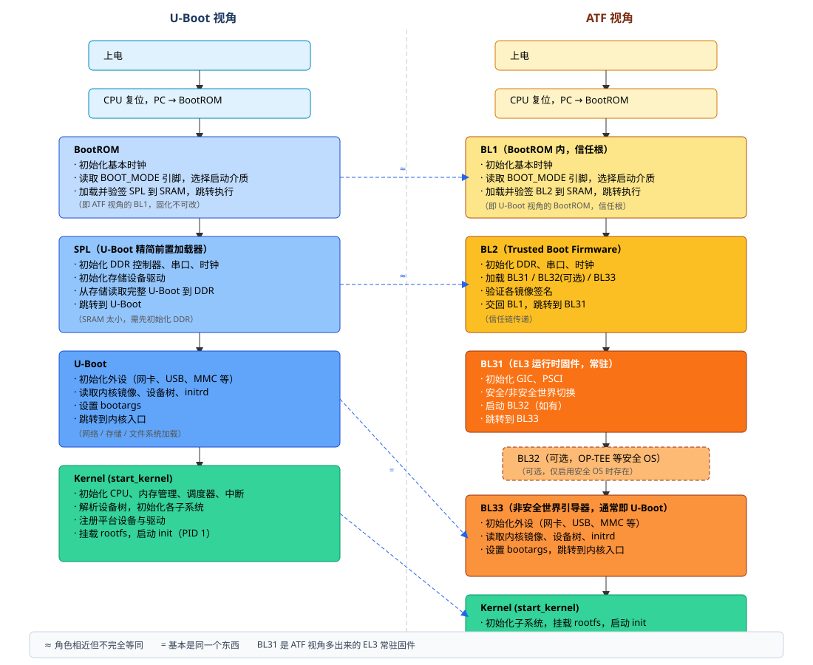
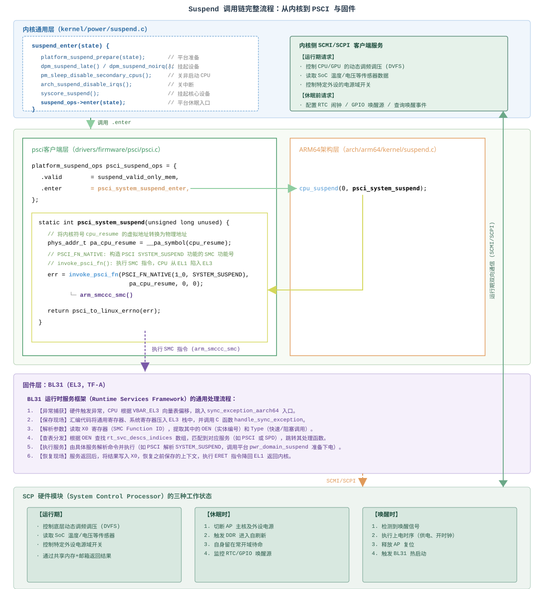
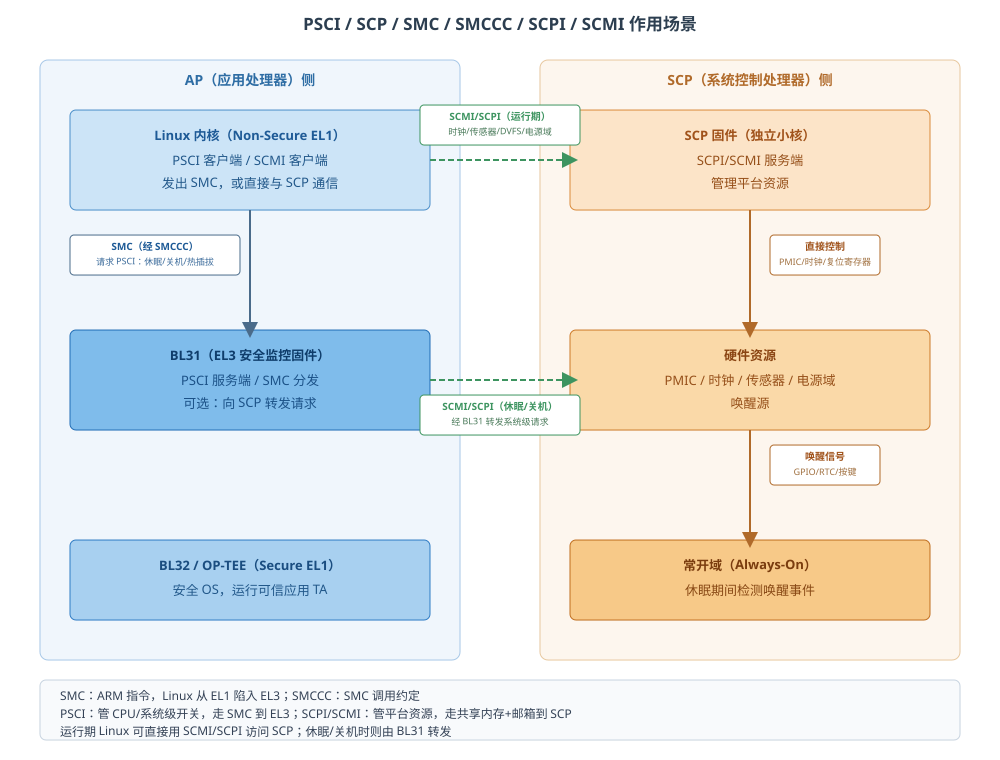

ARM ATF
一、ATF 是什么
ATF = ARM Trusted Firmware (现称 TF-A)
它是 ARM 定义的一套安全启动与运行时固件规范，它由多个独立固件模块组成，分别运行在不同异常等级（EL）上，分工不同。所以：
- 规范层面：ATF 定义了 BL1、BL2、BL31、BL32、BL33 这套启动链和接口；
- 实现层面：ATF 项目提供了 BL1、BL2、BL31 的代码，以及可选的 BL32（如 OP-TEE）；
- BL33 通常不属于 ATF：BL33 一般就是 U-Boot，是独立项目
一句话定位：Linux 想做但没权限做的事（开核、断电、复位、切世界），全部通过 SMC 交给 ATF 完成。
二、异常等级与安全世界
异常等级（Exception Level，EL） 是 ARMv8-A 架构引入的一个特权层级概念，用来划分代码运行时能访问的硬件资源和能执行的指令，核心目的是隔离与安全
2.1 四个异常等级
| EL | 名称 | 运行内容 | 权限 |
|---|---|---|---|
| EL0 | 非特权 | 用户态应用程序 | 最低，不能访问系统寄存器、不能执行特权指令 |
| EL1 | 特权 | 操作系统内核（Linux、OP-TEE） | 能管理内存、中断、进程 |
| EL2 | 虚拟化 | KVM / Hypervisor | 能虚拟化、管理多个 OS |
| EL3 | 安全监控 | 安全监控固件（ATF 的 BL31） | 最高，负责安全世界与非安全世界切换 |
2.2 安全世界与非安全世界
安全世界 和 非安全世界 是 ARMv8 在 CPU 内部划出的两个并行运行环境。它们共享同一颗芯片，但彼此隔离。
目的：保护敏感操作，如指纹识别、人脸识别、移动支付、DRM 版权保护、密钥存储、加密运算等等。
这些操作如果放在普通 Linux 里，一旦内核被攻破，密钥和指纹数据就泄露了。所以 ARM 把它们放到一个隔离的、普通世界无法访问的环境里运行。
关键点：
- 两个世界可以同时存在，CPU 可以在两者之间切换；
- 非安全世界不能访问安全世界的内存和外设；
- 安全世界可以访问非安全世界的资源（权限更高）。
「异常等级」和「两个世界」的关系图：

三、启动阶段 BL1 → BL33
3.1 两种视角下的启动链（对比图）

左边是 U-Boot 视角，右边是 ATF 视角。它们描述的是同一段上电过程，只是切分与命名不同：
3.2 各阶段职责
BL1（Trusted Boot ROM Firmware）
- 位置：芯片 ROM，出厂后不可改，是信任根的一部分
- 初始化：执行最小的架构与平台初始化（异常向量、控制台、串口、使能Trusted Watchdog、配置MMU等）
- 核心任务：从存储介质加载 BL2 裸镜像（≈ SPL），并对其进行验签（安全启动时）
- 启动路径：BL1 通过平台特定的机制（plat_get_my_entrypoint()）来判断当前是冷启动还是热启动。
BL2（Trusted Boot Firmware）
- 位置：从存储介质加载到 SRAM 中运行。
- 核心职责：初始化 DRAM（DDR）控制器，因为 SRAM 空间有限。它是镜像加载器，负责从存储设备中读取 FIP（Firmware Image Package），把里面的 BL31、BL32（可选）、BL33 分别加载到各自的平台特定地址。
- 参数传递：向 BL31 传递一个 bl31_params 结构体（通过 X0 寄存器），里面包含 BL31、BL32、BL33 的入口地址和状态信息。
- 生命周期：完成加载和跳转后，BL2 的使命结束，不会常驻。
3.2.1 BL31（EL3 Runtime Firmware）
- 位置：从 BL2 加载到 Trusted SRAM（或 DDR），常驻内存，运行在最高特权级 EL3。
- 核心职责：
- 启动阶段：决定把控制权交给谁
（如果存在BL32）先跳转到 BL32；BL32 初始化完成后通过 SMC 指令返回 BL31，BL31 再跳转到 BL33。否则直接跳转到BL33（Uboot） - 运行阶段
维持 EL3 安全环境，并解析非安全世界或安全世界的SMC请求，并分发给对应的服务处理函数：
1) PSCI（电源状态协调接口）：Linux 通过 SMC 请求 BL31 执行 CPU 热插拔、CPU suspend、系统关机/复位等操作（详见第五章）
2) SPD（安全监控调用）：如果系统存在 BL32，SPD 会处理非安全世界发来的安全服务请求，完成两个世界之间的上下文切换。
- 启动阶段：决定把控制权交给谁
- 生命周期：系统运行期间一直存在。
SMC 命令处理流程（以系统休眠为例，从内核一路走到 SCP）：

BL32（Secure-EL1 Payload，可选）
- 位置：和其他OS一样运行在内存（DDR）上，只是其内存被 TrustZone 硬件标记为安全世界专属。
- 典型实现：OP-TEE 等可信执行环境（TEE）操作系统。它内部可以调度多个可信应用（TA），TA 运行在 Secure EL0。
- 职责：处理敏感操作，如指纹比对、密钥管理、DRM 解密。非安全世界通过 SMC 调用 BL31，BL31 再路由请求到 BL32。
- 存在性：可选。如果平台不启用安全 OS，BL32 不存在，BL31 直接跳转 BL33。
BL33（通常是Uboot）
- 位置：运行在非安全世界，通常位于 EL2（如果启用了 Hypervisor）或 EL1（如果没用多虚拟系统）。
- 典型实现：U-Boot、UEFI 等引导加载程序。
- 职责：初始化外设（网卡、USB、存储等），加载 Linux 内核镜像、设备树、initrd，设置 bootargs，最后跳转到内核入口。
- 启动流程角色：它是 ATF 启动链的最后一环，把控制权交给操作系统
3.3 后续流程全局预览
启动完成后，BL31 就常驻下来接管”Linux 没权限做的事”。接下来的三章讲的就是这条调用链上的各个接口：SMC/SMCCC（怎么陷入 EL3）、PSCI（请求什么）、SCP/SCPI/SCMI（谁来真正执行）。先用一张全景图看清它们各在哪一层、谁跟谁打交道：

四、SMC 与 SMCCC
4.1 SMC
SMC（Secure Monitor Call）是 AArch64 的一条指令。执行它会触发一个同步异常，CPU 陷入 EL3，交给 ATF（BL31）处理；处理完用 eret 返回原来的世界。
为什么需要它
- 电源控制、世界切换这类操作涉及 Secure 资源，跑在 NS-EL1 的 Linux 无权直接做
- ARM 规定：跨世界、进 EL3 只能通过 SMC（
hvc用于进 EL2，svc用于进 EL1）
一次 SMC 都发生了什么
1 | Linux（NS-EL1）执行 smc #0 |
特点
- 同步：调用者阻塞等返回，不是中断，也没有回调函数
- 只能在低于 EL3 的等级发起，EL3 里再发 SMC 没有意义
- 参数只能通过寄存器传（x0~x7），大数据要放到共享内存里传地址
- handler 要短平快，不能睡眠、不能做耗时业务
4.2 SMCCC
SMCCC（SMC Calling Convention）是 ARM 定义的调用规范。SMC 指令只负责”陷入 EL3”，而参数怎么传、FID 怎么编、返回值怎么解释由 SMCCC 规定。有了这套约定，不同厂商的 OS 和固件才能互相调用。
FID（Function ID）怎么编
1 | bit[31] Fast(1) / Yielding(0) |
OEN 常见取值
| OEN | 含义 |
|---|---|
| 0x0 | Arm Architecture Calls |
| 0x1 | CPU Service |
| 0x2 | SiP Service（芯片厂商私有，各家自己定义） |
| 0x3 | OEM Service |
| 0x4 | Standard Service（PSCI、SDEI、TRNG…） |
| 0x5 | Standard Hypervisor Service |
Fast Call 与 Yielding Call
- Fast Call（bit31=1）：原子、不可被中断，用于短平快操作（开核、读版本号）
- Yielding Call（bit31=0）：可被中断，用于可能阻塞的安全服务（如 Trusted OS 的调用）
- 差别体现在 ATF 是否允许在处理期间响应中断、是否需要保存完整状态
寄存器约定
- 入参：
x0= FID，x1~`x7` = 参数；SMC32 只用低 32 位，高 32 位必须清零 - 返回：
x0= 返回值 / 错误码，x1~`x3` 可选 x8~`x17、x29、x30`、SP 等由 EL3（被调用方）负责保存，调用方不用管
Linux 侧怎么用
1 |
|
实际驱动里一般不直接用它，而是用内核封装好的 psci_ops；只有厂商私有 SiP 调用才会直接走 arm_smccc_smc。
五、PSCI
SMCCC 只是”怎么发 SMC”，PSCI 才是 SMCCC 之上最重要的一套标准服务：它规定了 OS 向 EL3 请求电源操作时的 FID 语义、参数含义和状态机。
5.1 PSCI 是什么
PSCI（Power State Coordination Interface，电源状态协调接口）是 ARM 定义的电源管理接口规范，运行于 SMCCC 的 Standard Service（OEN = 0x4）之下，由 BL31 实现。
一句话定位：Linux 想动电源，但电源控制器是 Secure 资源，只能发 SMC 请 BL31 代劳；PSCI 就是这套请求的标准格式与语义。
层次关系（把它放进前面几章的上下文）：
1 | Linux 内核（NS-EL1） |
为什么叫”协调”
- 多核多簇系统里，某个核能不能断电，取决于同簇里其它核的状态——只有最后一个核下线时才能真正给簇断电；
- 这类全局信息只有 EL3 掌握，OS 只负责”发请求”，仲裁和实际下电动作由 BL31 完成。
5.2 典型功能
PSCI 的函数走 SMCCC 的 SMC32/SMC64 两种形式，SMC64 只是把 bit30 置 1（即 0xC4xx_xxxx）。常用 SMC32 FID：
| 功能 | FID | 说明 |
|---|---|---|
| PSCI_VERSION | 0x84000000 | 查询固件实现的 PSCI 版本（0.2 / 1.0 / 1.1） |
| CPU_SUSPEND | 0x84000001 | 让本核进入指定低功耗状态，带 resume 入口 |
| CPU_OFF | 0x84000002 | 关闭本核（热插拔下线，不再返回） |
| CPU_ON | 0x84000003 | 启动指定核：target_cpu(MPIDR) + entry point |
| AFFINITY_INFO | 0x84000004 | 查询某个核/簇当前所处的电源状态 |
| SYSTEM_OFF | 0x84000008 | 系统关机 |
| SYSTEM_RESET | 0x84000009 | 系统复位 |
| PSCI_FEATURES | 0x8400000A | 查询某个函数是否支持、以及其特性（如电源状态格式） |
| SYSTEM_SUSPEND | 0x8400000E | 系统级挂起（整机休眠），唤醒后从 resume 入口继续 |
5.3 两条典型路径
开核（CPU_ON）
1 | Linux 调 psci_ops.cpu_on(cpu, secondary_entry) |
挂起/休眠（CPU_SUSPEND / SYSTEM_SUSPEND）
1 | Linux 调 psci_ops.cpu_suspend(state, resume_entry) |
这也是调试”唤不醒”的主战场：plat 的 suspend_finish 没把时钟/内存控制器恢复回原状，Linux 一跑就崩。
5.4 PSCI 与 SCMI 的分工
这两者最容易混，一句话区分：PSCI 管 CPU/系统级开关，SCMI 管平台资源。
| PSCI | SCMI | |
|---|---|---|
| 接口两端 | OS ↔ BL31（SMC） | OS/BL31 ↔ SCP（共享内存 + 邮箱） |
| 覆盖范围 | CPU 热插拔、CPU/系统挂起、关机/复位、休眠唤醒 | 时钟、性能（DVFS）、传感器、电源域、复位域 |
| 不覆盖 | DVFS、设备电源管理 | CPU 上下电的语义与状态机 |
实际系统里两者常串联：Linux 发 PSCI CPU_SUSPEND → BL31 仲裁后，通过 SCMI 让 SCP 真正去断 cluster 的电。
5.5 Linux 侧与 TF-A 侧的落点
- Linux：开机解析 DTB 的
/psci节点（method = "smc"或"hvc"、compatible = "arm,psci-1.0"），探测成功后填充psci_ops；驱动/内核只面对psci_ops，不直接拼 FID。 - TF-A：版本协商、状态机、拓扑等公共实现在
lib/psci/（psci_main.c、psci_on.c、psci_suspend.c）；真正写寄存器、上电下电的平台代码在plat/<vendor>/plat_psci_ops.c。
六、SCP 与 SCPI / SCMI
6.1 SCP
SCP（System Control Processor，系统控制处理器）是 SoC 内部一个独立于应用处理器（AP，即跑 Linux 的那颗大核）的专用微控制器，通常是一个 Cortex-M 系列的小核，运行独立的 SCP 固件。它的核心职责是把电源、时钟、复位等系统管理任务从 AP 上“卸载”下来，由自己专门负责。
在支持SCP的平台上，它的主要功能：
开机时，SCP 先于 AP 运行，完成初始硬件配置并给 AP 主核上电，AP 侧随后才能开始跑 BL1/BL2 等固件。
关机时，它同样依据请求执行最终的断电或复位动作。
休眠时，Linux 通过 SMC 请求 BL31，BL31 再通过 SCPI/SCMI 协议把电源操作转给 SCP 去执行 CPU 集群或系统级的断电操作。
唤醒时，它负责响应 GIC 唤醒请求、本地定时器事件或常开域唤醒源，并在条件满足后重新给 AP 上电。
6.2 SCPI
SCPI（System Control and Power Interface，系统控制与电源接口）是 ARM 定义的一套消息协议，专门用于应用处理器（AP）与系统控制处理器（SCP）之间的通信。它的核心作用是让 AP 侧的软件（无论是 BL31 还是 Linux 内核）能够向 SCP 请求电源管理、时钟配置、传感器读取等系统控制服务。
通信机制
异步且双向的、基于共享内存。AP 和 SCP 之间通过硬件邮箱（MHU） 传递“有新消息”的通知，而实际的消息内容（命令头 + 可选的数据负载）则被写入双方约定的共享内存区域。
可以做什么？
通过 SCPI，AP 可以请求 SCP 完成以下几类操作：
电源与功耗管理：设置 CPU 核心/集群的电源状态（如开关核）、系统级电源状态（关机/重启）、设置 CPU 唤醒定时器，以及控制 DVFS（动态电压频率调整）的工作点。
时钟管理：查询时钟能力，获取或设置特定时钟的频率。
传感器：读取温度等传感器的数据
6.3 SCMI
由于 SCPI 灵活性不足、难以扩展等问题，ARM 推出 SCMI（System Control and Management Interface，系统控制与管理接口）来替代SCPI，它也同样应用于处理器（AP）与系统控制处理器（SCP）之间的通信。
通信机制
与 SCPI 类似，SCMI 也依赖共享内存和硬件邮箱（MHU）。AP 将消息写入共享内存，然后通过邮箱“敲门”通知 SCP；SCMI 规定邮箱是调用固件的唯一允许方式。
主要管理能力
SCMI 定义了一系列标准协议，覆盖以下方面：
电源域管理：将设备或域置入不同的低功耗状态。
性能管理：控制 CPU、GPU 等计算引擎的性能等级（DVFS）。
时钟管理：设置和查询平台时钟频率。
传感器管理：读取温度等传感器数据，或接收阈值通知。
复位管理：复位外设或复位域。
与SCPI的区别
SCPI 的协议能力相对固定，Linux 内核中的 SCPI 驱动通过预定义的命令枚举。设备树绑定中，SCPI 甚至需要额外指定 num-domains 属性，因为协议本身缺乏运行时查询电源域数量的机制。
SCMI 引入了协议分层和发现机制。它定义了多个标准协议，每个协议有独立的 ID，设备树中，每个支持的协议作为 SCMI 节点的子节点存在，便于内核按需探测和初始化
SCMI 分工：管平台资源，是 OS 与 SCP 的双向协议，负责时钟管理、性能管理（DVFS）、传感器读取、电源域管理、复位管理。
七、代码结构速查
1 | TF-A/ |
想改电源行为 → plat/<vendor>/... 的 plat_psci_ops.c
想加私有 SMC → services/std_svc/ 或 plat 下加 DECLARE_RT_SVC
想看为什么唤醒失败 → lib/psci/psci_main.c + plat 的 suspend_finish
八、编译与调试
8.1 编译
1 | export CROSS_COMPILE=aarch64-linux-gnu- |
LOG_LEVEL：10 ERROR / 20 NOTICE / 30 WARNING / 40 INFO / 50 VERBOSEDEBUG=1会带上断言、更多日志、crash 输出make help/make PLAT=xxx help可看平台支持的所有选项
8.2 调试手段
- 串口日志：最核心。卡在哪一级，看最后一行 log 就知道
- crash console：ATF 崩溃时
plat_crash_console_flush()强行刷串口 - 常见现象与定位
现象 通常原因 完全无 log 串口基址/时钟配置错、BL1 就挂了 BL2 后无输出 DDR 初始化失败、FIP 里镜像地址冲突 BL31 后无输出 BL33 入口地址错、U-Boot 串口配置与 ATF 不一致 SMC 返回 unknown/not supported 该 OEN 服务没注册，或 FID 拼错 唤不醒 validate_ns_entrypoint校验不过、resume 入口没传、plat 的 suspend_finish 没恢复时钟/内存开核卡死 pwr_domain_on没释放复位、没写正确的 entry
九、面试常问
- 为什么 Linux 开核要发 SMC？ 因为电源控制寄存器是 Secure 资源，NS-EL1 无权访问，必须 EL3 代理，PSCI 就是这套标准接口
- SMC 的 FID 怎么编码？ bit31 fast/yielding、bit30 64/32、bit29:24 OEN、bit23:0 function number
- fast call 和 yielding call 区别？ fast 原子不可中断、用于短操作；yielding 可被中断、用于可能阻塞的安全服务
- ATF 和 OP-TEE 什么关系？ ATF 在 EL3 负责世界切换与监控，OP-TEE 在 S-EL1 提供可信服务；ATF 通过 SPD 加载并调度 OP-TEE
- CPU_ON 之后核从哪里开始执行？ 从 OS 传入的 entry point（
secondary_entry），ATF 会给它设置好上下文并eret到 NS-EL1/EL2